PPTP - Windows 7 配置
图一：
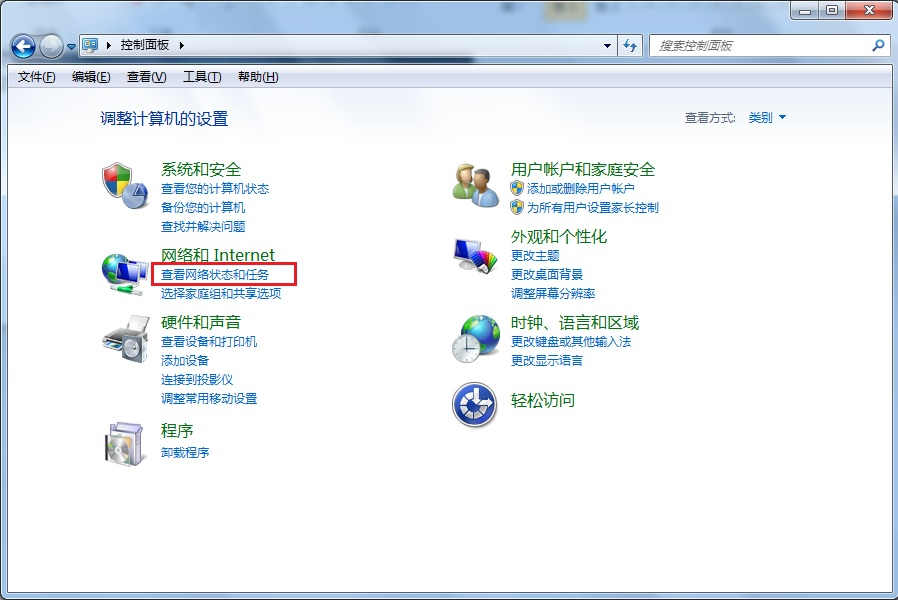
图二：
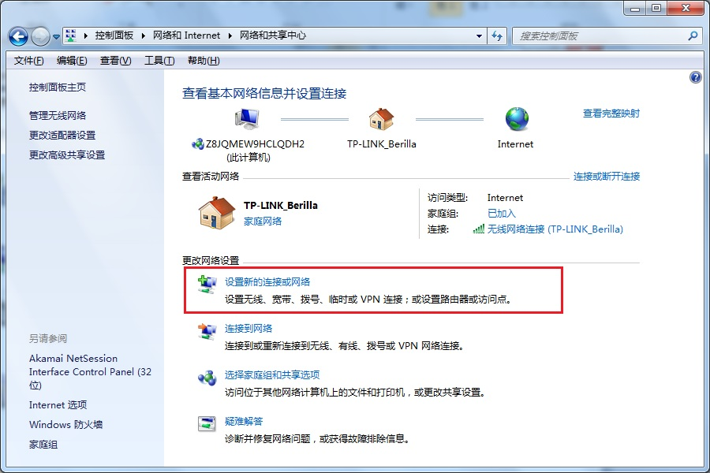
图三：

图四：

图五：
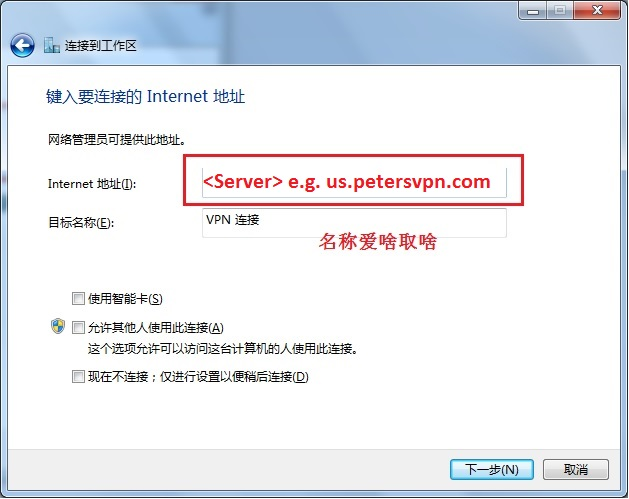
图六：
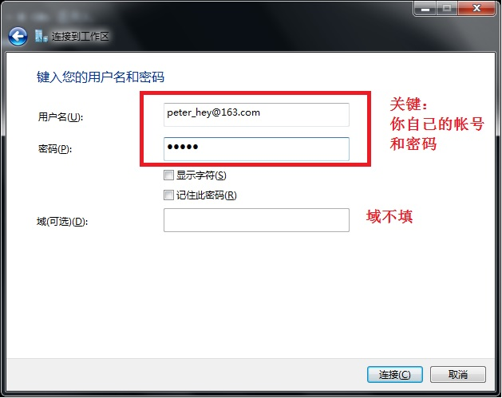
图七：
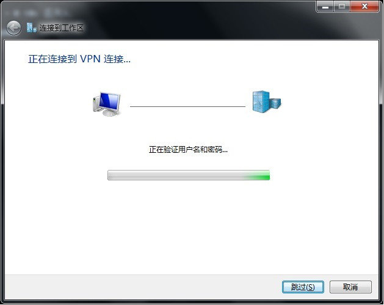
图八：
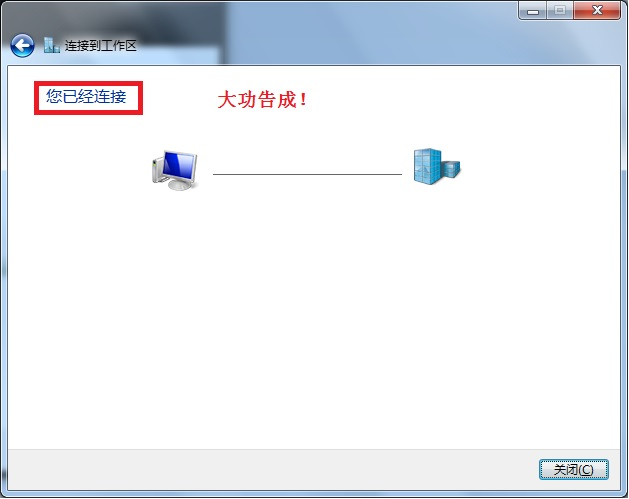
图九：
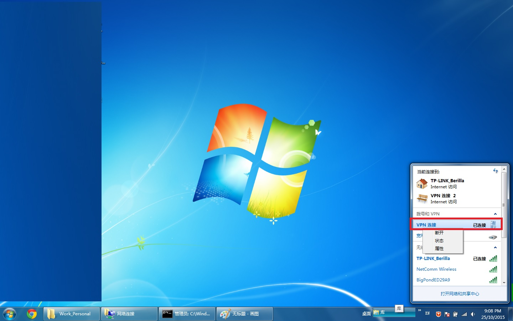
图十：
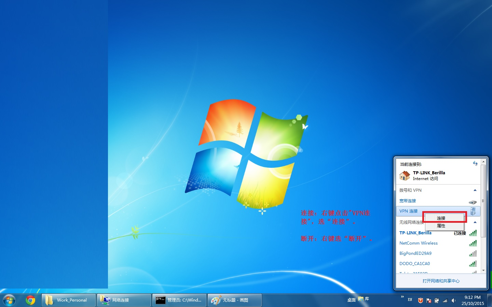
PPTP - Windows 10 配置
To create a new VPN configuration, go to Windows Start > Settings > Network & Internet > VPN.
Click + Add a VPN connection, and follow the screenshots below.
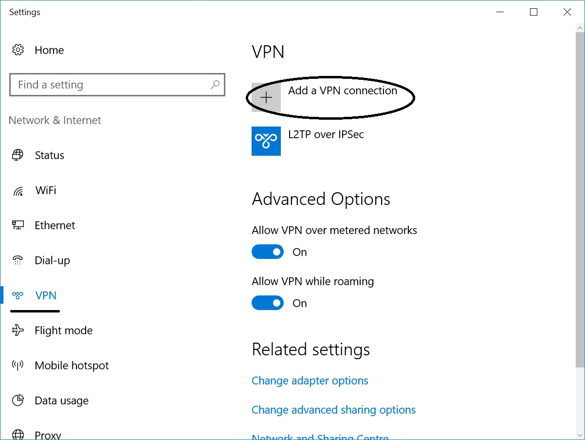
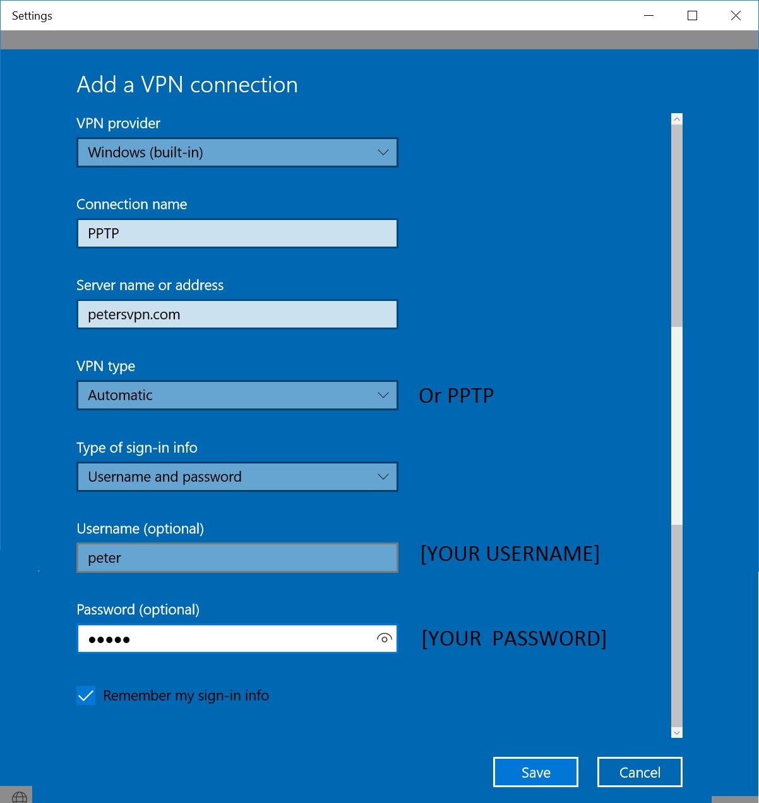
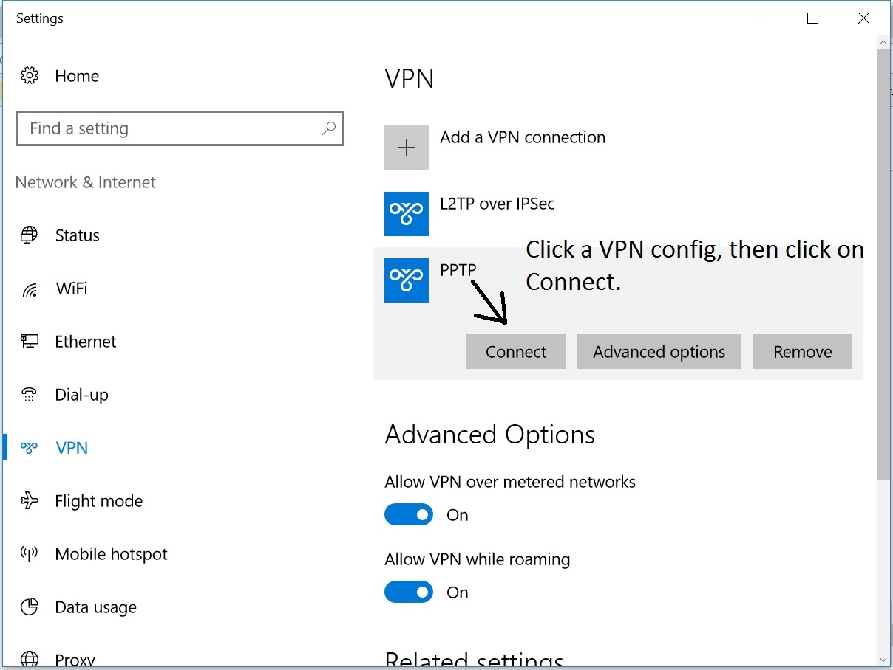
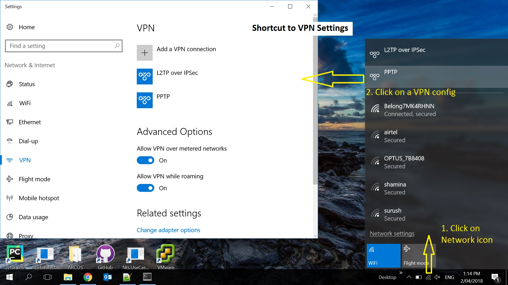
IPSec 使用说明
1. 下载并安装免费的 Shrew Soft VPN 客户端 Here。
安装时选择Standard Edition (Free)。
2. 单击开始菜单 -> 所有程序 -> ShrewSoft VPN Client -> VPN Access Manager。
3. 单击工具栏中的 Add (+) 按钮。
4. 在 Host Name or IP Address 字段中输入VPN 服务器地址 us.petersvpn.com 。
5. 单击 Authentication 选项卡，从 Authentication Method 下拉菜单中选择 Mutual PSK + XAuth。
6. 单击 Credentials 子选项卡，并在 Pre Shared Key 字段中输入petersvpn。
7. 单击 Phase 1 选项卡，从 Exchange Type 下拉菜单中选择 main。
8. 单击 Phase 2 选项卡，从 HMAC Algorithm 下拉菜单中选择 sha1。
9. 单击 Save 保存 VPN 连接的详细信息。忽略保存时的warning。
10.选择新添加的 VPN 连接。单击工具栏中的 Connect 按钮。
11. 在 Username 字段中输入[Your account or guest account]。
在 Password 字段中输入你的 [Your password or guest password]。
单击 Connect。
12. VPN 连接成功后，你会在 VPN Connect 状态窗口中看到 tunnel enabled 字样。单击 "Network" 选项卡，并确认 Established - 1 显示在 "Security Associations" 下面。
13. 断开点击Disconnect.
IPSec 配置截图
Step1:

Step4:
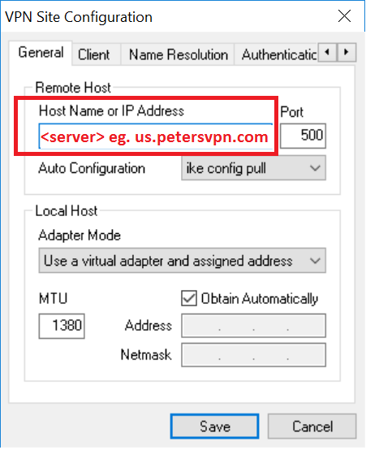
Step5:
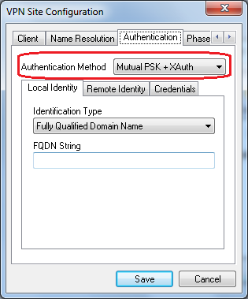
Step6:
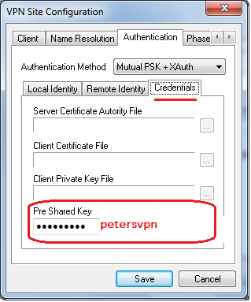
Step7:
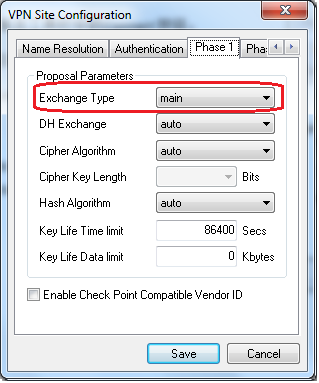
Step8:
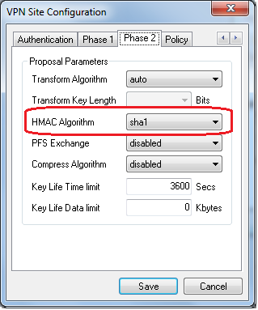
Step11:
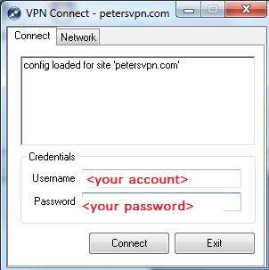
Step12:
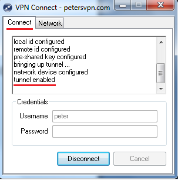
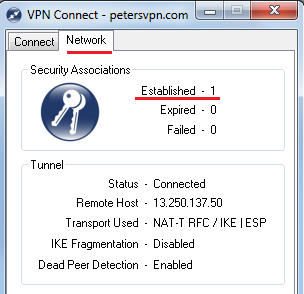